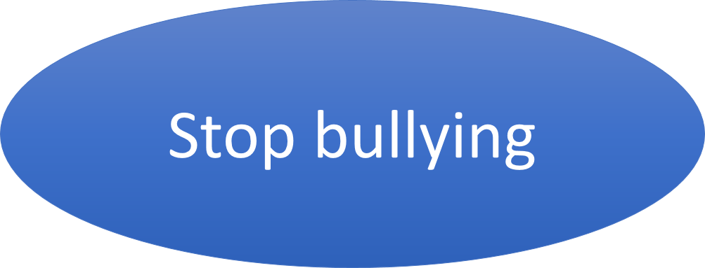
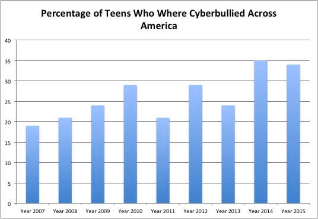
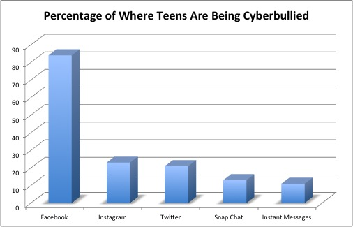
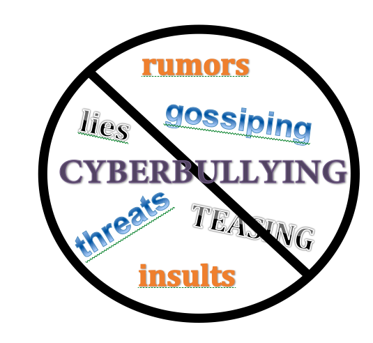

Online Safety & Privacy
In the Childnet “Let’s Fight It Together” film, the main character Joe is targeted through multiple platforms. Which of the following does the video show being used to bully him?
In the Childnet film, what does the video urge victims of cyberbullying to do as the most important first step?
In the StopBullying.gov “Is It Cyberbullying?” video, which of these situations is described as cyberbullying rather than ordinary conflict?
In Shane Koyczan’s TED talk “To This Day,” what was the main way bullying affected him and others long after school ended?
In the WellCast “How to Beat Cyberbullies” video, what does WellCast recommend you do before anything else when you receive a hurtful message?
According to the WellCast video, why is it important to save screenshots of cyberbullying messages?

Cyberbullying is the use of digital devices — phones, computers, tablets — to deliberately and repeatedly harass, threaten, embarrass, or target another person. Unlike a one-time rude comment, cyberbullying involves a pattern: it happens more than once, and the person doing it intends to cause harm.
It takes many forms. Harassment means sending repeated offensive messages. Doxing means publicly sharing someone’s private information — their home address, phone number, or school — without consent. Exclusion means deliberately leaving someone out of group chats or online events. Impersonation means creating fake accounts pretending to be someone else to damage their reputation. And “outing” means sharing someone’s secrets or private photos to humiliate them.
Cyberbullying can happen on any platform: social media apps like Instagram, TikTok, and Snapchat; messaging apps like WhatsApp and Discord; gaming platforms; email; and even school forums. Because the Internet is always on, cyberbullying can follow a person everywhere — into their bedroom, onto their phone, into every moment of their day. There is no “safe zone” the way there might be after leaving school grounds.

The effects of cyberbullying are real and serious. Victims often experience anxiety, depression, difficulty sleeping, and a drop in school performance. Some withdraw from friends and activities they once enjoyed. In severe cases, cyberbullying has been linked to self-harm and suicidal thoughts. Research from the Cyberbullying Research Center shows that over half of teens have experienced some form of cyberbullying in their lifetime.
Cyberbullying doesn’t just hurt the person being targeted. Bystanders — people who witness bullying but aren’t directly involved — are also affected. Watching someone get harassed online can cause stress, guilt, and a feeling of helplessness. Some bystanders worry that speaking up will make them the next target. But studies show that when bystanders do intervene — even with something as simple as sending a supportive private message to the victim — it can make a significant difference.
The emotional scars of cyberbullying can last well beyond the incidents themselves. As Shane Koyczan described in his TED talk, hurtful words have a way of sticking with people for years, shaping how they see themselves long after the bullying has stopped.

A digital citizen is someone who uses technology responsibly, ethically, and safely. The term netizen — a blend of “Internet” and “citizen” — captures the same idea: you are a member of an online community, and your actions matter just as much online as they do face to face.
Good digital citizenship starts with empathy. Before you post, comment, or share, ask yourself: “Would I say this to the person’s face?” and “How would I feel if someone said this to me?” Text on a screen can feel detached from reality, but there is always a real person reading your words.
Netiquette — short for “Internet etiquette” — is a set of informal rules for respectful online behavior. Some basics: don’t type in ALL CAPS (it reads as shouting), think before you share something about someone else, respect differences of opinion, and give people the benefit of the doubt. If a message seems rude, it might just be a misunderstanding — tone is hard to read in text.
Being an upstander rather than a bystander is another key part of digital citizenship. An upstander is someone who speaks up when they see something wrong. Online, that could mean reporting a harmful post, sending a kind message to someone being targeted, or simply refusing to “like” or share cruel content.

If you or someone you know is being cyberbullied, there is a clear set of steps to follow. First, document everything. Take screenshots of the messages, posts, or images — including dates, times, and usernames. This evidence is essential if you need to report the behavior to your school, a platform, or law enforcement.
Second, do not respond to the bully. Replying — especially in anger — often makes the situation worse. Cyberbullies frequently want a reaction; denying them one takes away their power.
Third, use the tools platforms give you. Every major social media app and messaging service has a way to block and report users who violate their terms of service. Reporting sends the content to moderators who can remove it and take action against the account.
Fourth, tell a trusted adult — a parent, teacher, school counselor, or another family member. You don’t have to handle this alone. Adults can help you navigate the situation, contact the school or platform, and make sure you’re safe. Organizations like StopBullying.gov and the Cybersmile Foundation offer free helplines and resources.
It’s also important to know that cyberbullying can have legal consequences. In many countries and U.S. states, cyberbullying can violate anti-bullying laws, and in serious cases — involving threats, stalking, or sharing intimate images without consent — it can be treated as a criminal offense. Young people have faced school suspension, expulsion, and even criminal charges for severe cyberbullying. The “it’s just the Internet” excuse does not hold up in a courtroom.
Which of the following is an example of cyberbullying rather than a single online disagreement?
What is “doxing”?
What is an “upstander”?
Why is it important to take screenshots when being cyberbullied?
Which statement about the legal consequences of cyberbullying is correct?
Create an interactive “Online Kindness Pledge” page where users can write and submit a personal pledge to be kind online. Your page should:
<textarea> where users type their pledge and a “Submit Pledge” button.localStorage so they persist across page reloads.<textarea> with a placeholder like “I pledge to…”max-height and overflow-y: auto)JSON.parse(localStorage.getItem(’pledges’)) and localStorage.setItem() for storagePaste your HTML into the HTML panel, CSS into the CSS panel, and JS into the JavaScript panel. Click “Run” to see the result!